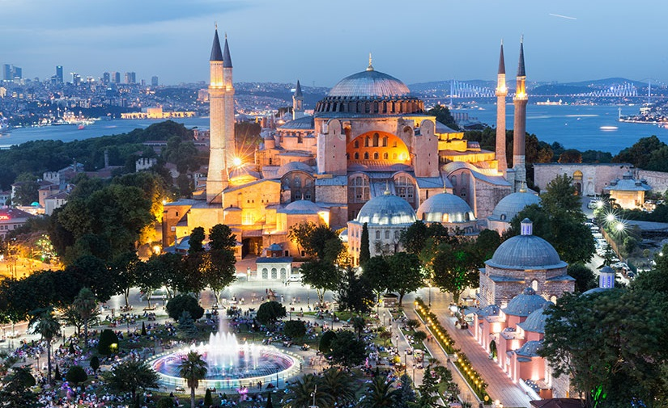
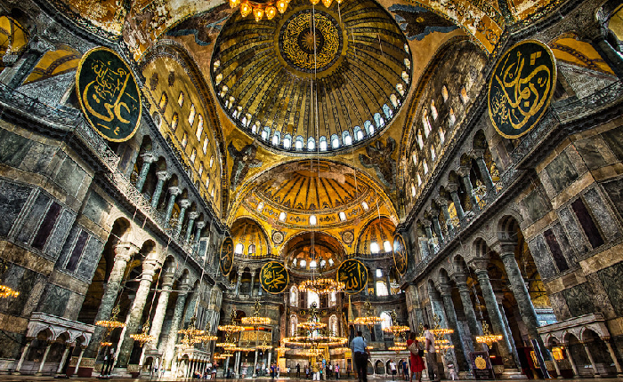

Why Go To Istanbul
Bridging East and West – Europe and Asia – Istanbul possesses a richly complicated heritage. Once the capital of the Ottoman and Byzantine empires, this city's prestigious history has left us with many monuments to cherish. Plus, it integrates its past and present to create a unique mix of architecture; a glass skyscraper next to a Byzantine church or a colorful bazaar in the shadow of a shopping mall. The natural landscape is also impressive. The Bosphorus, a narrow strait, cuts the city in two and connects the Sea of Marmara in the south to the Black Sea in the north. From the blue waters, visitors will see a skyline of domes, steeples and modern towers.
Although Istanbul looks serene from afar, the internal atmosphere is wonderfully chaotic. Discover the bustling streets and busy bazaar stalls that have characterized the city for hundreds of years. Drivers will jockey for position; shopkeepers will barter in an avalanche of chatter; and you'll be struggling to digest all of the sights, sounds and smells. Speaking of smells … during your exploration, taste the distinctly Turkish treats off the streets, including döner, Istanbul's version of fast food. And when the sun goes down, you'll see that Istanbul sheds some of its conservative facade to reveal a thriving nightlife. At the intersection of civilizations and continents for centuries, Istanbul surprises visitors with its fast pace, its ancient history and its present culture.
1. Hagia Sophia
Hagia Sophia Mosque is the best place to start visiting Istanbul's favorite Historic Peninsula.
Built three times in the same place as one of the most famous places of worship in the world, Hagia Sophia took its final form in 537.
On the day Hagia Sophia was opened to worship, Emperor Justinianos said, "Thank God for giving me the opportunity to build such a place of worship," and the Prophet in Jerusalem. It is rumored that he shouted "O Suleyman, I passed you", referring to the Temple of Solomon.


2. Topkapi Palace
The Ottoman Empire is one of the empires in the world that reached the widest borders and maintained its rule for centuries. Topkapı Palace, where this deep-rooted history and magnificent structure was ruled for 400 years and where the sultans and their families lived, is waiting to be seen in the Historical Peninsula in all its glory.
In this palace, which witnesses the most glamorous weddings, enthronement ceremonies or intrigues and sad stories of the Ottoman Empire, you can leave yourself in the arms of history and participate in a unique history feast.
Among the places to see in Topkapı Palace Museum and Harem Trip are the Harem section of the palace, the Cardigan-i Saadet Office and the Special Room, the Babü’s Saade section and the Pavilions Garden section.
3. Grand Bazaar
One of the most popular stops of the Historic Peninsula is the Grand Bazaar, which has been standing in Beyazıt for 550 years. The Grand Bazaar, known to foreigners as the Grand Bazaar, is famous for the streets you will get lost in and the jewelers that direct the world gold market.